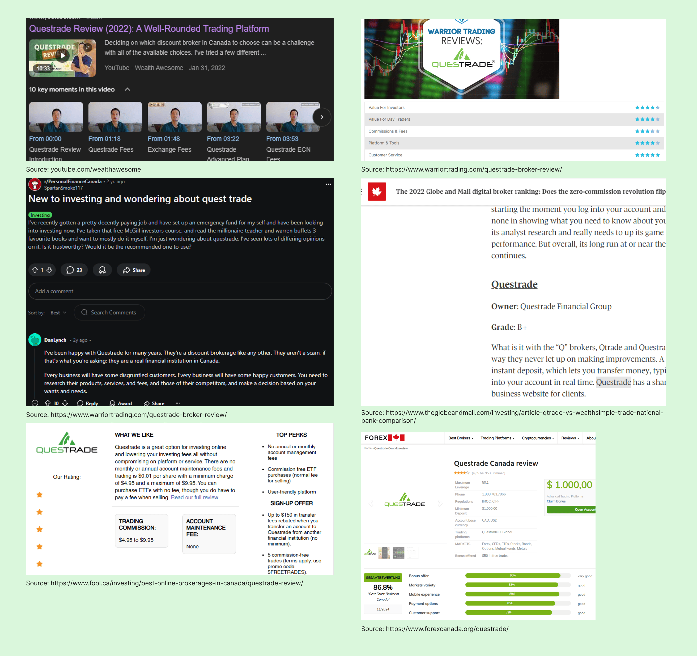

1 UX Designer, 1 UX Manager, 1 Product Owner, 1 UI Designer, 1 Content Designer, Product Managers, Development Team - Cactus!
8 Months (2022)
Mobile and Web
UX, UI, UXR, and Design System
Questrade is Canada’s fastest growing online brokerage with over 250k accounts opened annually, 30 billion dollars under administration, and 10x winner award for Canada's best managed companies.
Responsible for taking design ownership of their brand new web-trading platform, Trading. I was a UX Designer on the Investing team, tackling UX issues, new features, and improvements for the web application.
Faced with bad reviews and bad impressions of the initial UI overhaul of the web-trading app in 2021, Questrade needed a UI lift. I joined the team when the UI facelift was finished. I needed to iron out the overlooked UX issues, and take over any future major design features.
Identify current UX/UI issues, understand development constraints, optimize userflow through research and best practices.
Design and implement industry leading features to be on par with competitors.
Reduce negative reviews about the current design of the platform through fixing user specified pain points.
By understanding the user pain points through their online reviews and through our customer portal team, the UX team developed a list of design tasks for the design team to complete each quarter. Questrade also felt that they were falling behind fast-moving younger fin-tech companies, and needed to push new features as soon as possible. I was tasked with executing the preferred projects, two of them being trending stocks and education mode within a timely manner.
Released 3 update patches Trading 2.0, 2.1, and 2.2.
Improved user ratings from 2.5 stars to 3.5 stars within one year.
New trading API developed for Trending Stocks.
Questrade's low-rating reviews were the result of some of the following:
Design stronger, better, and faster to catch up with other popular online brokerages, some features that other brokerages had, Questrade lacked.
With over 200k active accounts, new designs must not disrupt the main user experience flow that most returning users are acquainted with.
The users need to understand what they are investing in, what type of order they are executing, what is a symbol, how to use the platform, and create a general sense of safety and comfort using the platform. The old UI design did not create an honest, safe, and usable atmosphere for these users.
To fully understand the reason behind the negative user reviews, I worked closely with the user research team and the data analytics team to uncover testing results.
Conducted a competitive analysis on leading online brokerages new functionalities.
Conducted a user survey involving 20+ non-trading users, to understand what they think a trending stock is, and what they want to see.
Created a user journey map, and userflow map to understand where to implement trending and education mode.
This cemented what type of lists we would show to users and gave us an understanding of what “retail investors” perceive when they see a trending stocks table.
One of the main user discoveries was that many users did not create a watchlist, if they did, there would not be many lists made. One of the reasons for that is that many casual investors (user persona) did not know enough stocks to make a watchlist.
The new design allowed users to quickly jump into exploring potential stocks to purchase or sell and/or allowed them to have the confidence with their watchlist.
With a list of suggested trending stocks, users also felt a sense of security since an established firm pre-made the trending stock watchlists.

The old design did not have a quick and easy way to find market movers or trending stocks, users had to know what stocks were trending, and type in the search bar or review their performance to find those stocks.
Located within the main account summary page, a fixed table included on the platform can allow users to always have access to a cohesive list with detailed information. The trending table location is located within the account summary tabs, which is integrated within a user's journey, when they are reviewing their performance.
One of the user's main journeys within Trading is to search for a specific stock. Originally, we were not going to include trending stocks into the search panel, because when users use the main search panel, they already have a symbol in mind. They do not need any more features added on, but since the development was going to integrate trending stocks into the watchlist search panel, we decided to include it in the search panel as well.
Education mode is built into the Trading platform that integrates helpful information for users who are not sure about investing literacy terms. It acts as a book-guide to make sure users fully understand their investing actions.

Education mode is built into the Trading platform that integrates helpful information for users who are not sure about investing literacy terms. It acts as a book-guide to make sure users fully understand their investing actions.
After every major update to the web-trading platform, we conduct UX audits to iron out any small UX issues that went unnoticed during the development/design phase. These are just some of the UX fixes that I found during my audits.
New features, new UX, and an overall stronger effort to improve the Questrade platform, their product line improved dramatically within 2022.
01
Working in a large design division
I learned work within in a very large UX design division with over 30+ active Designers spanning across visuals, research, UX, content, and management. I learned which discipline teams were needed for different scales of tasks/projects, and when and how to loop them in within the product lifecycle.
02
Stakeholder engagement and buy-in
Learned to identify who the stakeholders are, assess their needs, understand the level of UX maturity, preferred method of communication, and what to include in the level of engagement and actions. Once I mastered each of these pillars, then it led me to working on grabbing stakeholders buy-in. I learned in order to master stakeholder buy-in, you must speak their language, empathize their concerns, involve them early on, show and don’t tell, leverage data, and anticipate objections.
You May Also Like